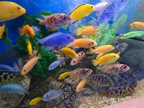

Selecting the ideal fish for your African Cichlid aquarium is a critical task that requires thoughtful
consideration. Compatibility, size, and temperament are key factors in this decision-making process. By
thoroughly evaluating these aspects, you can establish a harmonious and visually striking aquatic
community that thrives in your aquarium setup. Making well-informed choices is paramount to ensuring the
long-term health and vitality of your Cichlids.


Choosing the perfect combination of African Cichlid species for your aquarium is a pivotal decision that
demands careful deliberation. Compatibility, size, and temperament emerge as pivotal factors in this
endeavor. By conducting a thorough assessment of these elements, you can create a cohesive and visually
captivating aquatic environment. These considerations are not to be underestimated, as they play a
crucial role in nurturing the enduring well-being and vibrancy of your Cichlids, making informed choices
indispensable for long-term success.
Choosing the right tank size for your African Cichlids is a pivotal decision in creating a thriving
aquatic environment. Consider factors such as the number and size of your fish, as well as the available
space in your home. A spacious tank provides room for Cichlids to swim, explore, and establish
territories, contributing to their overall well-being. Make an informed choice to ensure your Cichlids
have ample space for growth and social interaction.